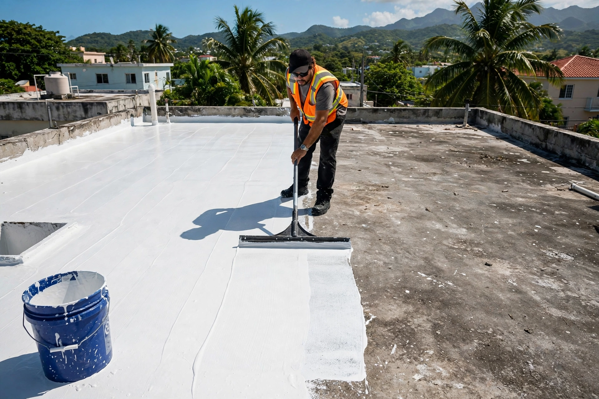
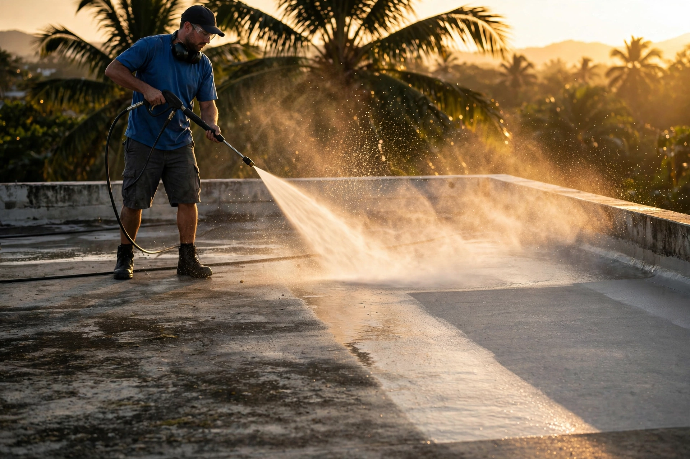
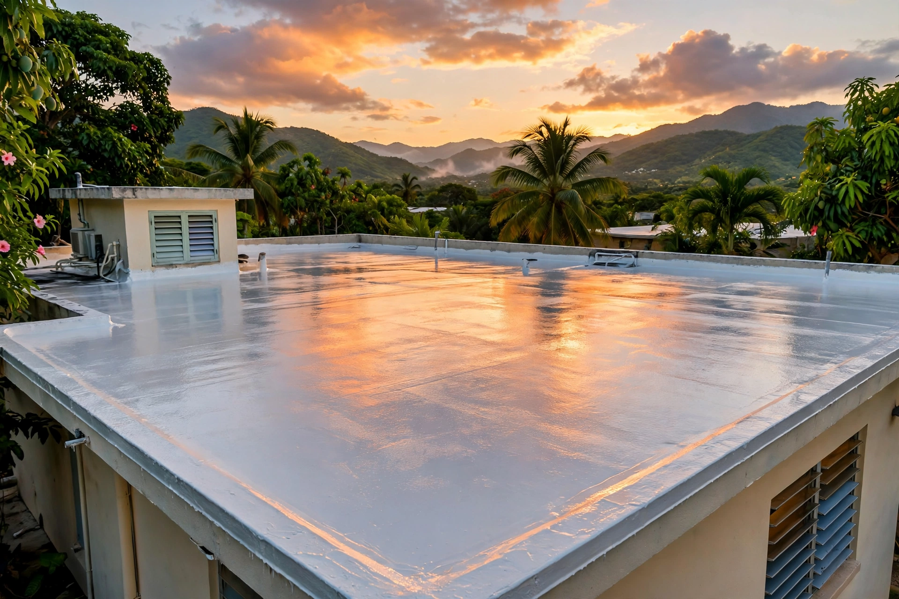
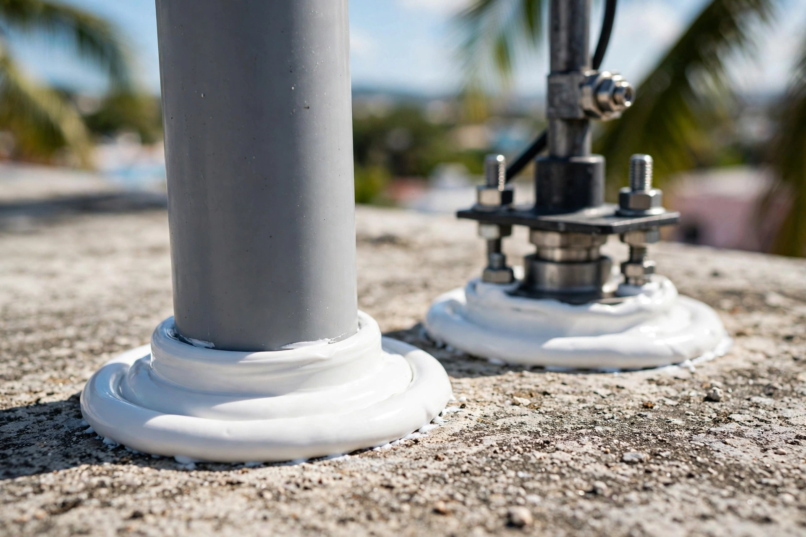

Levittown, Toa Baja y área metro · Toa Baja
Sellado de techos y consultoría en Levittown, Toa Baja. Te orientamos con la verdad sobre tu techo y sellamos con sistema garantizado.
Resultados reales
Cada foto es un trabajo real en techos. Desliza la cinta y toca cualquier foto para verla grande.




← desliza para ver los trabajos →
Lo que hacemos
Del diagnóstico al sellado final: un solo equipo responsable de que tu techo quede seco.
Sellado completo con preparación seria y materiales de calidad garantizada.
SelladoTe orientamos sobre el estado real de tu techo y qué sistema le conviene. Sin vender de más.
ConsultoríaCorrección del punto de filtración antes de sellar, para que no vuelva.
FiltracionesInspección detallada: grietas, empozamientos, drenaje y estado del sellado anterior.
EvaluaciónPlan de mantenimiento para que el sellado dure lo que tiene que durar.
MantenimientoEscríbenos por WhatsApp y te orientamos sin compromiso.
GratisAsí de fácil
Nos cuentas de tu techo por WhatsApp y te orientamos con la verdad.
Visitamos en Toa Baja y evaluamos el techo a fondo.
Te proponemos el sistema correcto para tu caso, ni más ni menos.
Sellamos con garantía por escrito. Techo protegido.
Quiénes somos
Masso Roofing Inc en Levittown, Toa Baja: sellado de techos con consultoría incluida. Creemos que un cliente orientado toma la mejor decisión, por eso primero te explicamos el estado de tu techo y luego sellamos.
Oriéntate antes de sellar. Escríbenos por WhatsApp al 787-795-1097.
Preguntas frecuentes
Es una evaluación honesta de tu techo: qué tiene, qué necesita y qué sistema de sellado le conviene. Te la explicamos en lenguaje claro antes de cotizar.
La orientación inicial por WhatsApp es gratis y sin compromiso.
Base en Levittown, Toa Baja y servimos el área metropolitana.
Sí. Corregimos la filtración de raíz y luego sellamos el techo completo.
Sí, el sellado incluye garantía por escrito.
Por WhatsApp al 787-795-1097 con fotos de tu techo.
Escríbenos por WhatsApp y cotiza el sellado de tu techo hoy mismo.
Cotiza tu sellado
Teléfono / WhatsApp
787-795-1097Área de servicio
Levittown, Toa Baja y área metro
Sellado de techos
Residencial y comercial
Llena esto y te abrimos WhatsApp con tu mensaje listo.
Cotización sin compromiso: dinos tu pueblo y el estado de tu techo, y te orientamos con el mejor plan.
Esta página la creó ManuPro. Escríbenos hoy mismo y cotiza la website profesional de tu negocio.
Cotizar por WhatsApp